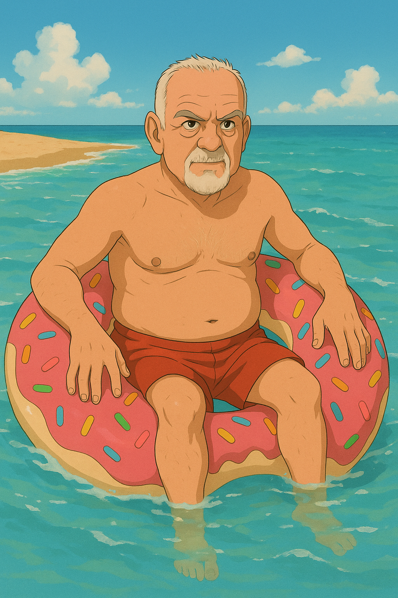
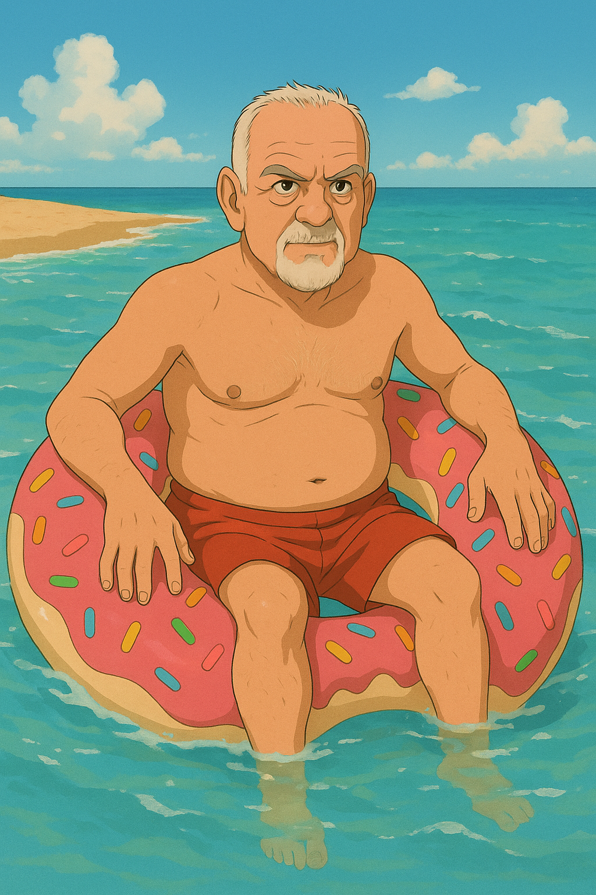
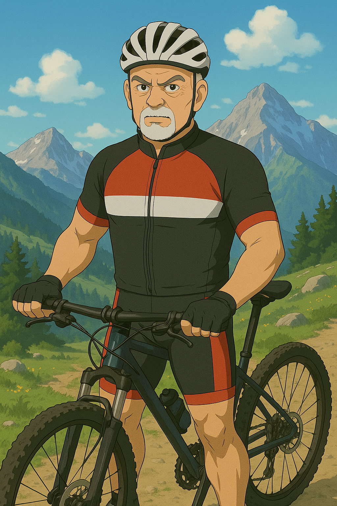
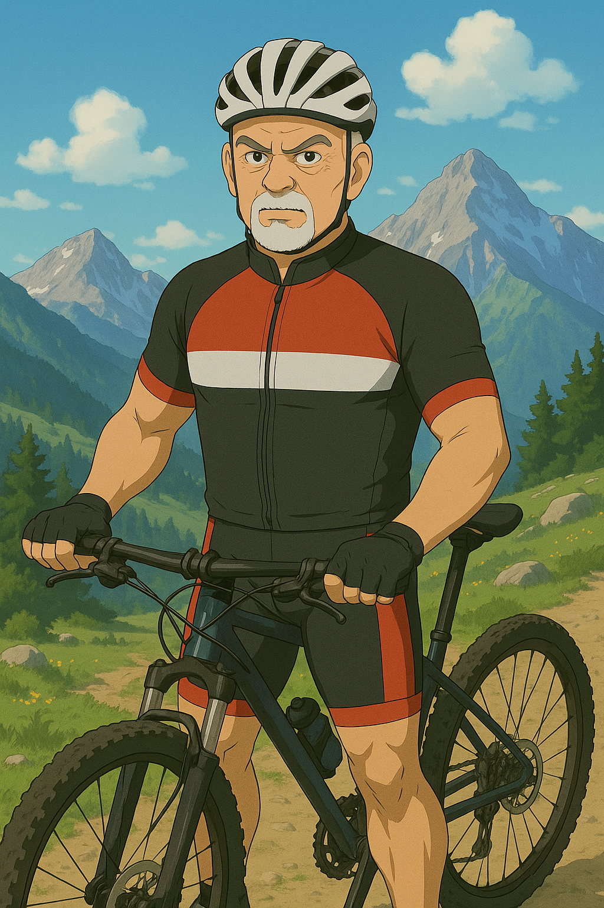

Don Fabio
 


 



Descrizione
Fondatore del Due Mori e proprietario, ora in pensione. Ha un carattere deciso, diretto e affilato come una mandolina, ma sa essere dolce come una pera matura.
Altezza
Circa 3 m
Mansione
Controllo generale, cameriere, figura protettiva
Velocità
Rapido e forte come un cinghiale
Piatto preferito
Pane e marmellata – colazione mistica certificata UNESCO
Fetish
Far dimagrire tutti
Debolezza
Disordine e pigrizia
Pazienza
Bassa
Paese preferito
Italia
⟵ Torna alla Home